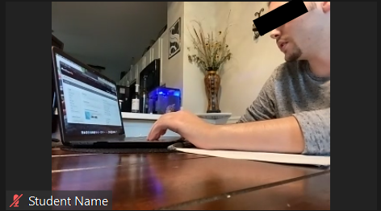
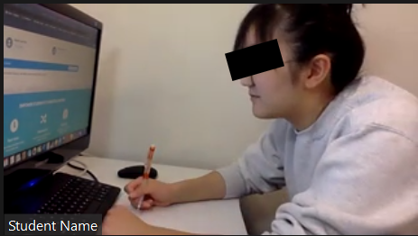
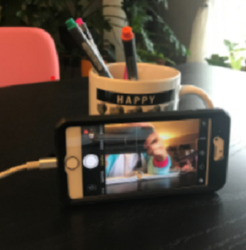
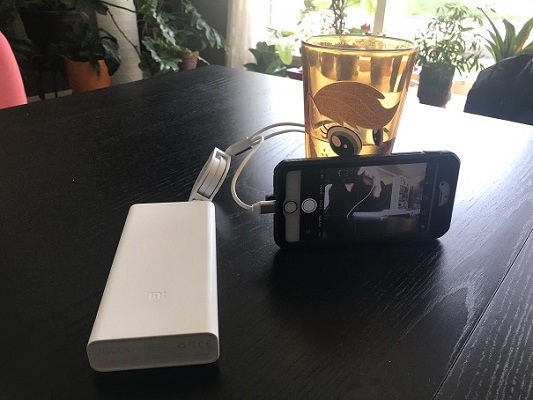
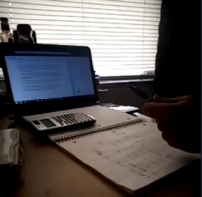
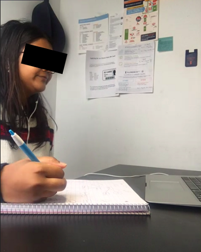

Online Exam Instructions
Because of an issue with exam scheduling this year, the first exam will have to be held online. We have experience doing this during the COVID years, and we are confident that we can administer these exams in a way that are fair and minimize cheating.
However, for this to work, you will need to find a quiet place to take your exam. Depending upon your living situtation, this may be difficult in your dorm room. Please make every attempt to find a safe place to take the exam. However, if you are unable to do so, please let the instructor know at least three days before the exam is administered.
NOTE: Students with either SDS accommodations or a make-up exam time will take their exam in person. Online proctoring only applies to students taking the exam at the regular time.
Exam Requirements
To take an online exam, you will connect be given a special Zoom link. Not all students will receive the same Zoom link, as we need to keep the size of these rooms small for proctoring purposes. You will connect to the Zoom link with two devices:
- an exam device (e.g. laptop) for accessing the exam
- a proctor device (e.g. cell phone) for proctoring
Both devices must be capable of video. This means that your laptop should have a webcam, either built-in or attached as an external device. The webcam must be turned on. You may not use virtual backgrounds. We recommend taking the exam in quiet, isolated spot if this is going to be an issue. See below for how the proctor device should be positioned.
In addition to the Zoom session, you must also login to Gradescope. This is where we will distribute the exam. You will not use the CS 1110 Gradescope page. Instead, you will access the course CS 111OL (Intro to Computing Online Edition). You will be enrolled in this course automatically.
You must take the exam on paper using a pencil (or pen). You may not use a tablet or stylus. In addition, you may only use loose paper. You may not use a notebook (spiral bound or otherwise). In addition, no headphones/earphones allowed when you are writing the exam.
Exam Session
You must join the exam Zoom link 15 minutes before the exam (so 7:15 pm EST). Video must be enabled on both devices, but you should only enable audio on your proctor device (cell phone). However, you should stay muted at all times. Do not disrupt others.
Once the exam begins, you may use the exam device for reading the exam questions and ending the exam only. You may not use the exam device for any other actions until your exam ends. Similarly, you may not touch your proctor device until your exam ends, except to communicate via chat (not voice) with your proctor in case of internet or browser problems.
The entire Zoom session, starting from system/environment check in the beginning through the submission of the scanned exam, will be recorded. You should have several sheets of paper on your writing surface. You will get the full exam period to answer the exam questions and extra time to scan and upload your answers.
Exam Submission
When the exam ends, you must use a smartphone (or computer) with an app installed for scanning handwritten documents and producing a PDF. You can follow the official Gradescope recommendations. Previous students and course staff also have had good experience with CamScanner.
You should continue to stay muted during this process. Once you have uploaded your scan, use Zoom chat to tell the proctor that you have uploaded and wait for the proctor to check the upload and give you the OK. Do not leave the Zoom session until you havemthis confirmation.
You can choose to leave the exam early by selecting End exam now on the last
page of the exam questions. Once you have chosen to end the exam, you are not
allowed to write more answers or modify your answers, even if there is time
left in the exam period. Do not touch your phone for scanning before you have
ended the exam view in the browser, except for
internet or browser problems discussed below.
You must submit your scanned answer pages as one pdf file and you may submit the file only once. As part of the upload process, you must associate the pages of your pdf to the questions on Gradescope.
Gradescope by default sends you an email with a link to your uploaded file, which allows you to re-upload your file. DO NOT re-upload any file after you have left the Zoom proctor session. Once you have left the proctored exam session, uploading a file to replace your existing exam file would be a violation of academic integrity.
Internet or Browser Issues
An exam is valid only if it is proctored. If your device drops the Zoom proctor session, you must reconnect to the Zoom proctor session as soon as possible. Once you reconnect,immediately inform the proctor of what happened, using chat on on your proctor device (cell phone). The proctor will then ask for another sweep of the area and allow you continue taking the exam.
If your browser accessing the exam questions freezes or disconnects, wave at your Zoom session camera and use Zoom chat on your proctor device (cell phone) to alert the proctor. If you do not get a response within 2 minutes, you may need to reboot your proctor device. Once have a response from the proctor, try reloading Gradescope (reboot if necessary). The proctor will reset your acess to allow you to continue taking your exam.
If your internet remains down for an extended period of time, we recommend calling the panic phone number listed below. Write the number down so that you have it available during the exam. Use it (call or text) if you experience extreme internet issues during the exam. However, this number should be a last resort, and should only be used if multiple attempts to reconnect with your proctor fail. This number will be active only during the online exam period.
If you experience a brief drop in connection we will flag your exam for inspection, but we will not automatically invalidate it. We reserve the right to conduct “spot check” interviews after the exam to ask selected students to explain (not reproduce from scratch) their answer or approach to one or a few exam questions to the instructor. For extreme cases of Internet connectivity problems, such as those that require calling the panic phone number, the instructor will determine how to address the situation.
Panic Number: 607-255-8346
This phone number is your instructor’s office number. It has been forwarded to his cell phone so that you can contact him at any time.
Phone Position
When placing your phone, make sure your camera angle shows your face, computer screen, and work space/desk.

Good Positioning 1

Good Positioning 2
Find something to prop your phone against. Keep the phone plugged in if at all possible.

Phone Support
Use a power bank if you can’t reach an outlet.

Power Bank
Unacceptable Set-Ups
The set-up below is unacceptable because the lighting is poor and we cannot see the student’s face. The camera should never point to a light source (i.e. the window). It is also unacceptable to use a notebook. You should use loose sheets of paper only.

Poor Lighting with Illegal Notebook
The set-up below is also unacceptable, since the computer screen is not visible.
In addition the student is wearing earphones, which is not allowed (and using
a notebook).

No Computer Screen with Earphones